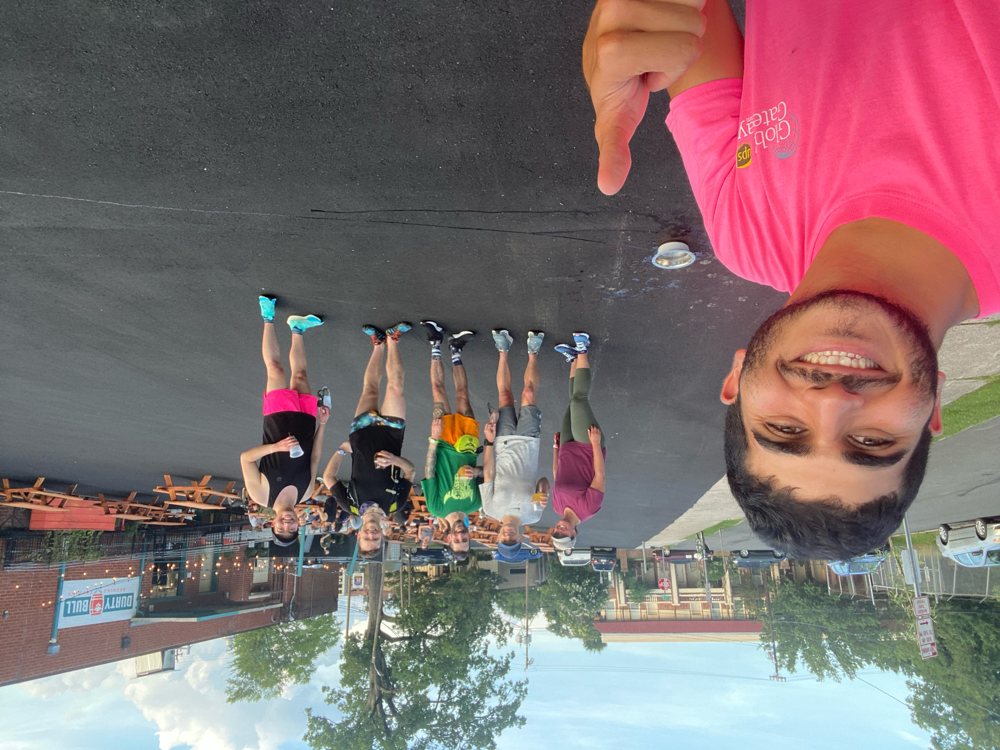

Day 4: Dee and the Runners
June 8, 2021
Allow me to describe a moment:
I’m sitting at a bench table at Durty Bull Brewing Company. My lovely friend Adelaide has joined me, enjoying a brew just the same––hers a fruity American Wheat, and mine a harsh, hazy DIPA. She keeps talking, even though I have told her this is my blog time. Adelaide, shh, I’ve said again and again. Mornings and afternoons are for biking, evenings are for writing! She acknowledges it, and goes again. Oh, the plight of best friendship.
We had just bought our drinks from Dee, Top Manager at the relevant brewery. We engaged in kind conversation at the bar, though I was mentally somewhere else––I had a blog to write! I must have something to show for my time out and about. After all, it had been three days since my last post.
The preceding 48 hours had been quite fun, and especially busy. I paired brief trail rides with fantastic restaurants, coffee, and beer, for many of which my friends Eron and Joe joined me. The ease of these two days was heightened by (1) the adverse weather, and (2) the kind offer of the Lutterman family to let me crash in their backyard.
Anyway, we took our drinks back to our bench, where I cracked my laptop open, and she continued The Woman in the Window. I downed Dee's favorite, the $400 Jeans, while I wrote the introduction:
I spent days two and three riding around the Raleigh and Durham areas. Each day was especially easy on my legs, aided by adverse weather and my friend Eron’s parents’ offer to let me camp in their yard. To my misfortune, the soreness of my legs has leaked into my back, which I’ll blame on …
Jesus, this blog would have sucked. There was no joy in my writing voice, and especially no appreciation for the scenery, people, and happenings around me. Why would I ever treat a blog on this aesthetically unsatisfactory website as a job?
One of my professors (and great friends!), Sharon James, taught me the importance of specifics. People care about stories. And where do you get stories? From people, and from putting your screen down!
Just then, Dee was walking out her girl-friend, who had brought her a series of gifts for #NationalBestFriendsDay. She was giddy off the surprises: the first was a nude self-portrait (at least she thought, though I recall the hair donned a shade of pink absent in Dee's); the second was a meat-y dinner from a nearby restaurant.
Adelaide and I took note of her joy and struck conversation, this time a genuine one: Where did your friend get so kind? Where did you get those shoes? Do you own this place? Can your son read? We spiraled into a discussion about Ryan’s World, her leggings, and Tik Tok. I closed my laptop. This was what this was about. This! The conversation ended with the necessary: following Dee on Instagram.
When a squad of runners finished their route, seemingly by design, at the brewery, Dee went inside to serve them. Moments later, three or so bench tables were full with these sweaty folk. Most filed in to grab drinks, others brought their own, their mouths guzzling beer and gasping for breath just the same. To one walking behind me, I shouted, Hey! What is this?
He told me about the Bull City Beer Runners, a group that meets in Durham every Tuesday night to drink beer, run, then drink beer again. We bonded over poor health habits and being out of shape, and he introduced me to their leader, though we collectively agreed that this was a "socialist organization." Here I am with them, in front of Durty Bull:
I told them about the college drinking game, “Beer-io Kart,” a modern rendition of Mario Kart, where players have to finish two beers––without drinking and driving!––before the race is complete. Winners win pride and free drinks. They let me know that Beer-io Run is up next, before engaging with me in conversations about communism, building bicycles, and ed-tech.
Time was lightning, each flash in the past gone as fast as the one now. I had told Adelaide to shh for the first time roughly three hours ago. There was one paragraph in my blog thus far, meaningless and worthless at that. I scrapped it as soon as I opened my laptop again.
So let me describe another moment:
I’m sitting at Sir Walter Coffee on day 5, writing "Day 4: Dee and the Runners." I had spent the rest of the night at dinner with Adelaide, talking to an axe-throwing coach, venturing into a bar-cade, setting up camp in Eron’s backyard again, then joining his parents for ice cream (before eventually falling asleep in his guestroom).
Did I mention “the goal to write” in my first blog entry? No. Did I mention “the goal to live”? Definitely. And we're off to a good start.
P.S. I do not recommend Dark Matter at all. I regret having read it.